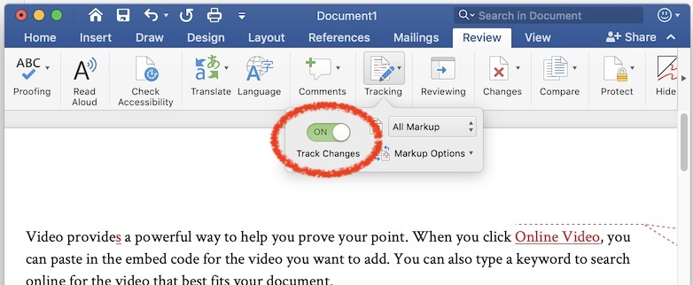

[A2] Research Proposal 修改
我们在课堂上已经讲述了一些常见的写作问题，并且就部分同学的 research proposal 进行了现场修改。在本次作业中，同学们会在先前 research proposal 的基础上，使用修订 (track changes) 模式对 research proposal 进行文字修缮工作：

通常，你需要作出以下修改：
- 对逻辑断开/不强的地方进行移动，使得全文逻辑顺畅、紧凑；
- 改写段落的组织，段落开头明确地以 topic sentence 概括段落；使全文的 topic sentences 阅读起来是连贯的逻辑；
- 对表达意义不明确、不直接、不简洁的句子进行改写；
- 对拼写、语法等错误进行修订。
完成修改后，在下框中提交 research proposal (依然是 docx 格式)，保留所有修订。
作业提交 (截止日期：2019 年 11 月 28 日 23:59:59)
Research Proposal 修订要求
这一次，我们希望修改过后的 research proposal 文字的逻辑和组织能达到严肃研究论文的标准。具体来说，你的论文需要兼顾多个方面的读者：
- 大一大二的学生，他们能对你的研究背景和研究问题产生一定的了解和兴趣；
- 完全不熟悉你的研究领域，但是有一定计算机科学背景的人，可以认为是计算机科学知识掌握较为扎实的本科毕业生，他们能比较准确地理解你的研究问题，你的研究挑战和部分的方法；
- 你研究领域的大同行，熟悉研究领域中常见的研究方法，也阅读过大领域的经典论文，他们在阅读完后能准确地理解你的研究方法和研究贡献；
- 你研究领域的专家 (小同行)，或是你引用强相关工作的作者。他们可能是决定你的研究工作/论文是否录用的审稿人。他们应该能快速找到并跳过他们熟悉的背景知识，快速、准确地对你的研究贡献和研究方法的价值给出准确的评价。
试着组织好你的逻辑，考虑每个读者对每个段落会阅读到什么程度；同时注意整体的逻辑结构，包括 topic sentences 的衔接和组织。这个过程非常痛苦，但效果也十分的好，所以坚持住！
查阅资料